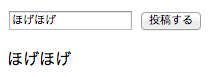

Perl入学式 #10
- 日時
- 2012年11月25日（日） 14:00 - 17:00
- 会場
- Joe'sビジネスセンター
- http://www.joeswebhosting.net
Perl入学式について
- Perl入学式(http://www.perl-entrance.org)は, プログラミング未経験者からPerl初心者を対象としたワークショップです
- 公式Twitter
- 公式ハッシュタグ
- #Perl入学式
- 公式Facebookページ
会場について
- 今回のPerl入学式は「Joe'sオープンソースJelly」の一環ということで、株式会社Joe'sクラウドコンピューティング（http://www.joeswebhosting.net）様より特別に会場をお借りしています
- この場をお借りしてお礼申し上げます
ロゴについて

- 横山陽平さん(http://yokoyamayohei.com/)にデザインしていただきました
- この場をお借りしてお礼申し上げます
IT勉強会スタンプラリー

- Perl入学式は, IT勉強会スタンプラリー(http://it-stamp.jp/)に参加しています
- 今回のPerl入学式は, スタンプラリーの対象となる勉強会です
- 台紙は勉強会終了後にお渡しします
喋ってる人
- 名前 ： 若林 信敬
- Twitter ： @nqounet
- Facebook ： nobutaka.wakabayashi
- 仕事 ： フリーエンジニア（IT系）
- 屋号 ： IT Office 西宮原
#10の目標
- Perl入学式の最終目標である簡易掲示板を、復習しながら実際に作成していきます。
本日の内容
本日の内容（その１）
- とりあえずページを表示してみよう（helloworld）
- フォームを作ってみよう(form)
- フォームから投稿された文字列をそのまま表示してみよう（get）
- 長い文が投稿されてもちゃんと表示できるようにしてみよう（post）
本日の内容（その２）
- テンプレートの重複部分をまとめてみよう（include）
- 投稿された記事を蓄えてみよう（file）
- 日本語（マルチバイト文字）をちゃんと保存してみよう（encode_utf8）
- 蓄えられた記事を表示してみよう（decode_utf8）
準備
- Perl
- Mojolicious
Perl
Perlの環境を構築しておきましょう。
Perl入学式: ModernなPerlの開発環境の構築方法（2012年8月版）
Mojolicious
Mojoliciousをインストールしておきましょう。
$ cpanm Mojolicious
Hello World
とりあえずページを表示してみよう
- Mojoliciousの機能を使って雛形を作成します。
$ mojo generate lite_app
- 以下のような表示が出ていれば、ちゃんと実行できています。
[chmod] myapp.pl 744
Hello World
myapp.plというファイル名プログラムが作成されているので、そのプログラムを実行します。
$ morbo myapp.pl
- 以下のような表示が出ていれば、ちゃんと実行できています。
Server available at http://127.0.0.1:3000.
Hello World
- ブラウザを開いて、
http://localhost:3000にアクセスしてみてください。 - 以下のような文字が表示されればOKです。
Welcome to the Mojolicious real-time web framework!
Form
フォームを作ってみよう
- まずはフォームを作ってみます。
Form
- 日本語を都合よく扱うための処理を書きます。
#!/usr/bin/env perl
use utf8; # <この行を挿入
use Mojolicious::Lite;
use utf8;
use utf8;した状態のPerlは、日本語などのマルチバイト文字でも、文字として正しく扱うことができます。- ターミナルで試してみましょう
# use utf8;していない状態
$ perl -e 'print length "abcあいう";'
# use utf8;した状態
$ perl -Mutf8 -e 'print length "abcあいう";'
Form
- その後ろ2行ほどを削除します。
# Documentation browser under "/perldoc" # <この行を削除
plugin 'PODRenderer'; # <この行を削除
PODRenderer
PODRendererはMojoliciousのプラグインで、perldocを綺麗に見るためのプラグインです。- 削除する前に、
http://localhost:3000/perldocにアクセスして確認してみてください。
Form
- もともと表示されている文字列を削除します。
Welcome to the Mojolicious real-time web framework! # <削除
Form
- 削除したところに、フォームを出力するコードを書きます。
%= form_for '/' => begin
%= text_field 'body'
%= submit_button '投稿する'
% end
helper
form_for、text_field、submit_buttonなどは、Mojoliciousのhelperという機能で定義されたPerlの関数（サブルーチン）です。helperについては、次回詳しく説明する予定です。参考になるページ
Form
- ここまで出来たら、保存してから、ブラウザをリロード（あるいは
http://localhost:3000にアクセス）してみてください。 - この後も、入力が終わったら動作を確認するので、ブラウザはそのまま開いておいてください。
- こんな感じでフォームが表示されていればOKです。

- しかし、フォームから投稿しても、画面上は何も変わりません。
- 次は、フォームから投稿された文字列を、画面に表示するようにしてみましょう。
Get
フォームから投稿された文字列をそのまま表示してみよう
- フォームは出来ましたので、次はフォームをちゃんと機能させてみましょう。
Get
- まずはテンプレートを変更します。
- 19行目あたりに以下のように追加します。
%= submit_button '投稿する'
% end
<p><%= $body %></p> <この行を挿入
<%= $body %>は、テンプレートの中でPerlの変数などを表示するときに使用します。- 今の場合、Perlで書いてある
$bodyという変数の値を表示する、という意味になります。
.ep
- テンプレート（例えば
index.html.ep）の最後には.epという拡張子がついています。 - この拡張子は
Embedded Perlの頭文字をとったものです。 - これは
Mojoliciousが標準で使えるテンプレートのシステムを示しています。
template
MojoliciousのテンプレートでPerlのコードを実行させる書き方としては、タグと行の二種類があります。
# タグ
<% Perlのコード %>
<%= Perlのコード %>
<%== Perlのコード %>
# 行
% Perlのコード
%= Perlのコード
%== Perlのコード
Get
- 次に、formの情報を取得します。
- 6行目あたりに以下のように追加します。
get '/' => sub {
my $self = shift;
my $body = $self->param('body'); # < この行を追加
$self->param('body')は、フォームから投稿したbodyという名前がついている値を取得します。
Get
- 続いて、先ほど取得した情報を、テンプレートで使えるようにします。
- 7行目あたりに以下のように追加します。
my $body = $self->param('body');
$self->stash(body => $body); # < この行を追加
$self->stash()に、値を渡すと、テンプレートでも使えるようになります。- 今の場合は、
bodyに、変数$bodyを渡したので、テンプレートでは$bodyとして使えるようになります。
Get
- ここまで出来たら、保存してから、ブラウザをリロード（あるいは
http://localhost:3000にアクセス）してみてください。 - そして、フォームに何か文字を入力して
投稿するボタンをクリックしてみてください。 - フォームに書いた文字がフォームの下に表示されたでしょうか？

Get
- 画面に投稿した文字列が表示できるようになりましたが、実はとても長い文字列を入力すると、正しく処理できません。
- 例えば、
http://www.yahoo.co.jp/を開いて、ページの情報をコピー＆貼り付けして投稿してみましょう。 - アドレスバーには、投稿されたような形跡がありますが、画面上は空のフォームが表示されていると思います。
- 次は、長い文字列でも正しく動作できるように変更してみましょう。
Post
長い文が投稿されても、ちゃんと表示できるようにしてみよう
- 先ほどのフォームは、
HTTPでいうところのGETでのリクエストです。 GETでのリクエストは文字数の制限（おおよそ2KB程度）がありますので、掲示板など、多くのデータを送信する必要がある場合は適しません。- このような場合は
POSTによるリクエストを行います。
HTTP
HTTPについては、ネットワークの知識も必須となるので、Perl入学式では深く取り上げません。- 通常の用途で使用するのは
GETとPOSTであり、それらをうまく使い分けられれば当分は問題ありません。 - 参考になるページ
Post
- まずは、テンプレートを追加します。
index.html.epの部分をすべてコピーして貼り付けて、post.html.epというテンプレートを作成します。- こうすることで、
http://localhost:3000/postにアクセスした時に読み込まれます。
# @@ index.html.epを貼り付け
@@ post.html.ep # テンプレート名を変更
% layout 'default';
% title '出力'; # タイトルを変更
%= form_for '/post' => method => 'POST' => begin # 投稿先などを変更
%= text_field 'body'
%= submit_button '投稿する'
% end
<p><%= $body %></p>
form_forに書いたmethod => 'POST'で、getではなくpostで送信するようになります。
Post
@@ index.html.epの方は、$bodyを表示しないようにしておきます。form_forも忘れずに変更しておきましょう。- 検証しやすいように
titleも変更しておきましょう。
@@ index.html.ep
% layout 'default';
% title '入力フォーム'; # タイトルを変更
%= form_for '/post' => method => 'POST' => begin # 投稿先などを変更
%= text_field 'body'
%= submit_button '投稿する'
% end
Post
- 続いて、Perlのコードの方も変更します。
- 現在の
getの部分のコードをすべてコピーして貼り付けます。 - そして、
bodyの処理をしている部分を削除します。
get '/' => sub {
my $self = shift;
my $body = $self->param('body'); # 貼り付けしたあと削除
$self->stash(body => $body); # 貼り付けしたあと削除
$self->render('index');
};
Post
- 続いて、postについての処理を書きます。
bodyの処理が書いてある方を一部変更します。
post '/post' => sub { # この行を変更
my $self = shift;
my $body = $self->param('body');
$self->stash(body => $body);
$self->render('post'); # この行を変更
};
param
paramは、getでもpostでも同じように動作します。
Post
- ここまで出来たら、保存してから、ブラウザをリロード（あるいは
http://localhost:3000にアクセス）してみてください。 - そして、フォームにhttp://www.yahoo.co.jpのページの内容をコピー＆貼り付けして
投稿するボタンをクリックしてみてください。 - getの時には出力できなかった文字列が、フォームの下に表示されたでしょうか？
Post
- 作成した
postのテンプレートは、index.html.epをコピー＆貼り付けして作成しましたが、フォームの部分を両方共変更する必要がありました。 - このまま使いつづけると、フォームを変更する度に2箇所とも変更する必要があります。
- 次は、共通しているテンプレートを一つにまとめてみましょう。
Include
テンプレートの重複部分をまとめてみよう
Mojoliciousには、テンプレートを共通化する仕組みがあります。- その機能を使って、重複している部分をまとめてみましょう。
Include
- まずは共通の部分を作成します。
- 共通になっているのは以下の部分です。
%= form_for '/post' => method => 'POST' => begin
%= text_field 'body'
%= submit_button '投稿する'
% end
- この部分だけを
form.html.epとして定義します。
@@ form.html.ep
%= form_for '/post' => method => 'POST' => begin
%= text_field 'body'
%= submit_button '投稿する'
% end
Include
- 新しく作成した
form.heml.epを使うにはincludeという命令を使います。 indexの部分は以下のようになります。
@@ index.html.ep
% layout 'default';
% title '入力フォーム';
%= include 'form';
postの部分は以下のようになります。
@@ post.html.ep
% layout 'default';
% title '出力';
%= include 'form';
<p><%= $body %></p>
Include
- ここまで出来たら、保存してから、ブラウザをリロード（あるいは
http://localhost:3000にアクセス）してみてください。 - 変化はありませんが、それが正解です。
- テンプレートは変えましたが、出力されるHTMLは変えていません。
- テンプレートは
includeを使うことで、共通の部品として利用できます。
Include
- ここまでで表示することは出来ていますが、このままでは自分自身の投稿（しかも、1回分だけ）しか見ることはできません。
- 掲示板らしく、自分自身の過去の投稿や、他の人が投稿したデータも見ることが出来るようにしましょう。
File
投稿された記事を蓄えてみよう
- 投稿された文字列を表示させる前に、まずは投稿された文字列を蓄えるようにしましょう。
- 保存する方法は何種類もありますが、今回は簡単に扱えるファイルを使って保存するようにします。
File
- 今回はテンプレートの変更はありません。
- Perlのコードの部分を変更します。
- 記事を投稿した時の処理なので、
postの部分を変更します。 - 12行目あたりに以下のコードを追加します。
my $body = $self->param('body'); # この行の後ろに追加
my $datafile = qq{myapp.dat};
open my $fh, '>>', $datafile or die $!;
print $fh qq{$body\n};
close $fh;
open
openの行は、$datafileを追加モード（>>）で開いています。- エラーの場合は、ここで異常終了（
die）させます。例外を発生させる、とも言います。 $!にはエラーの内容が入っています。- ファイルが正しく開けなかった場合には、プログラムの実行を続けないことが肝心です。
- 参考になるページ
print $fh
- 開いたファイルは、今回の場合は
$fhで操作します。 - 今回の
$fhのような変数を、ファイルハンドル、と言います。 printのあとにファイルハンドルを書き、その次に出力する文字列を書きます。- ファイルハンドルの後ろにはカンマは不要です。
- 参考になるページ
qq{}
qq{}は、"（ダブルクォーテーション）と同じ意味です。出力する文字列の中に
"があるような場合に使うとエスケープが不要になるので、コードが読みやすくなります。参考になるページ
close $fh
- 開いたファイルは、ちゃんと閉じましょう。
- プログラムが終了すれば自動的に閉じられますが、
closeをした時点でファイルの取り扱いを終えたことが、コードを読む人にもわかります。 将来の自分自身のために、ちゃんと閉じておきましょう。
参考になるページ
File
- ここまで出来たら、保存してから、ブラウザをリロード（あるいは
http://localhost:3000にアクセス）してみてください。 - 何度か書き込みをしてみて、実際にデータファイルが出来ているか確認してみてください。
File
- ファイルにデータが保存されていると思いますが、この状態では日本語を保存するときに警告が出ます。
morbo myapp.plしたターミナルを確認し、以下のようなエラーが出ているのを確認してください。
Wide character in print at myapp.pl line 15.
- 次は、このエラーを修正し、日本語のデータを正しく扱ってみましょう。
encode_utf8
日本語（マルチバイト文字）をちゃんと保存してみよう
use utf8;した状態のPerlは、日本語も含め文字をちゃんと扱うように考えられています。- しかし、そのまま画面やファイルに出力しようとすると、警告が出ますので、適切に処理する必要があります。
- ちなみに、
Mojoliciousが最終的に出力する文字列に関しては、Mojolicious自体が適切に処理しています。
encode_utf8
- 今回はテンプレートの変更はありません。
- Perlのコードの部分を変更します。
- Perlで文字コードを扱う場合は、
Encodeというモジュールを使います。 - 3行目あたりに以下のコードを追加してください。
use Mojolicious::Lite;
use Encode; # < この行を追加
- 大文字と小文字は区別しますので、間違えないように入力してください。
jcode.pl, Jcode.pm
- 昔、Perlを使ったことがある方は、
jcode.plやJcode.pmを知っているかもしれませんが、それらのことは、もう忘れてください。モダンなPerlを理解する上での弊害になります。 - モダンなPerl（バージョン5.8.1以降）では、日本語などのマルチバイト文字を扱うスクリプトを書く場合は、文字コードを
UTF-8にして、use utf8;を書いておくことが推奨されています。 - 参考になるページ
encode_utf8
use Encode;すると、幾つかの関数が使えるようになります。（エクスポートされる、とも言います）- その中の一つ
encode_utf8を使ってエンコードした文字列をファイルに書き込むようにします。 - 16行目あたりのコードを以下のように変更してください。
print $fh qq{$body\n}; # < この行を以下のように変更
↓
print $fh encode_utf8(qq{$body\n});
encode_utf8
- ここまで出来たら、保存してから、ブラウザをリロード（あるいは
http://localhost:3000にアクセス）してみてください。 - ひらがなでもカタカナでも漢字でも構いませんので、何度か書き込みをしてみてください。
- 先ほどのようなエラーは出なくなっていると思います。
encode_utf8
- 書いた記事が蓄えられるようになりました。
- 次は、その蓄えた記事を表示するようにしてみましょう。
decode_utf8
蓄えられた記事を表示してみよう
- ファイルに蓄えた記事をPerlで読み込む際には、単純にファイルを読むだけではなく、Perlが扱えるようにしてやる必要があります。
decode_utf8
- まずはテンプレートの方を変更します。
- トップページのテンプレート（
@@ index.html.ep）に、どのように表示するかを考えながら書いて行きましょう。 - 34行目あたりに以下のコードを追加してください。
% for my $entry (@{$entries}) {
<p><%= $entry %></p>
% }
- ここでは段落で書いていきますが、余裕がある人は、番号なしリストなどで書いてみてください。
decode_utf8
- 続いてコードの方も変更します。
- ファイルから読み込む時は、Perlで正しく扱うためにデコードしてやる必要があります。
- まずは、データファイルの設定、そして、ファイルの読み込みです。
- 7行目あたりに、以下のコードを追加してください。
get '/' => sub {
my $self = shift; # この行の後ろに追加します。
my $datafile = qq{myapp.dat};
open my $fh, '<', $datafile or die $!;
my @entries = <$fh>;
close $fh;
<$fh>
- ファイルから読み込む時は、ファイルハンドルを
<$fh>のように<と>でくくります。 - 配列に代入すると、ファイルの1行が1項目となり、すべての行が代入されます。ただし、行末の改行は削除されませんので、注意が必要です。
- 改行を削除するには
chompを使います。 - 参考になるページ
decode_utf8
- 続いて、デコードと、テンプレートへの引渡しです。
- 11行目あたりに、以下のコードを追加してください。
@entries = map { decode_utf8($_) } @entries;
$self->stash(entries => \@entries);
decode_utf8
- トップページの処理は、最終的には以下のようになります。
get '/' => sub {
my $self = shift;
my $datafile = qq{myapp.dat};
open my $fh, '<', $datafile or die $!;
my @entries = <$fh>;
close $fh;
@entries = map {decode_utf8($_)} @entries;
$self->stash(entries => \@entries);
$self->render('index');
};
decode_utf8
- ここまで出来たら、保存してから、ブラウザをリロード（あるいは
http://localhost:3000にアクセス）してみてください。 - 前回から投稿してある文字列が表示されたと思います。
decode_utf8
- 今の状態では、投稿したあとの画面では、最後の投稿しか反映されていません。
- 連続して投稿はできますが、過去の投稿を見るためにはどうすればよいでしょうか？
- 続きは次回（Perl入学式 #11）に実施します。
次回予告
- 投稿した後、記事を表示するページを表示してみよう（redirect_to）
- コードの重複部分をまとめてみよう（helper）
- URLが投稿されたら自動的にリンクしよう（正規表現）
- 何も入力しないで投稿したら、リロードしよう
- スペース（全角含む）だけの投稿があったらエラーを出そう（バリデーション）
- 投稿する項目を増やしてみよう
- スタイルシートでデザインをつけよう（public）
- 内容は変わる場合があります。
今回のコード
- 今回動作させてきた最終的な
myapp.plは、以下のようになります。
#!/usr/bin/env perl
use utf8;
use Mojolicious::Lite;
use Encode;
get '/' => sub {
my $self = shift;
my $datafile = qq{myapp.dat};
open my $fh, '<', $datafile or die $!;
my @entries = <$fh>;
close $fh;
@entries = map {decode_utf8($_)} @entries;
$self->stash(entries => \@entries);
$self->render('index');
};
post '/post' => sub {
my $self = shift;
my $body = $self->param('body');
my $datafile = qq{myapp.dat};
open my $fh, '>>', $datafile or die $!;
print $fh encode_utf8(qq{$body\n});
close $fh;
$self->stash(body => $body);
$self->render('post');
};
app->start;
__DATA__
@@ form.html.ep
%= form_for '/post' => method => 'POST' => begin
%= text_field 'body'
%= submit_button '投稿する'
% end
@@ index.html.ep
% layout 'default';
% title '入力フォーム';
%= include 'form';
% for my $entry (@{$entries}) {
<p><%= $entry %></p>
% }
@@ post.html.ep
% layout 'default';
% title '出力';
%= include 'form';
<p><%= $body %></p>
@@ layouts/default.html.ep
<!DOCTYPE html>
<html>
<head><title><%= title %></title></head>
<body><%= content %></body>
</html>